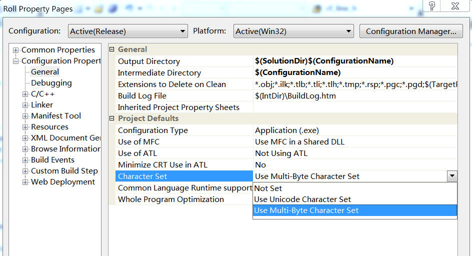

实例说明VS2005、Python程序读写文件时的字符编码问题¶
发布于：2012-10-10 | 分类：finite element analysis
根据项目需求，需要以文本文件的方式实现MFC程序与Marc程序之间的数据交换，现将其简化为：通过MFC程序选择一个目标路径并另存为文本文件temp.txt，然后在Mentat中调用python脚本读取该路径，实现在该路径下保存Marc模型文件test.mud。
MFC写文件¶
通过以下代码将文件对话框获取的路径写入C:\temp.txt：
CFile file(_T("C:\\temp.txt"), CFile::modeWrite|CFile::modeCreate|CFile::typeBinary);
CString str = dlg->workPath;
file.Write(str, str.GetLength());
file.Close();但是，使用记事本打开C:\temp.txt发现存在两个问题：
-
路径不完整——表明写入的字符数不正确
-
中文路径出现乱码——表明存在编码错误。
这是因为VS2005默认为Unicode编码，根据Unicode编码规则，GetLength()获得长度实际为CString的一半，于是出现路径不完整的错误；而记事本默认为ANSI编码格式，于是出现乱码。
相应对策为：
-
人为地，将写入字符数乘以2
file.Write(str, 2*str.GetLength()) -
采用Unicode的解码格式。实际上已经采用Unicode格式存储，显示乱码与否只是编辑器解码的问题，不影响程序数据交换。
改进后，在Sublime Text以UTF-16 le编码格式打开C:\temp.txt，发现一切正常。
Python读文件¶
通过以下代码读取C:\temp.txt中的目标路径：
from py_mentat import *
import codecs
# main function
def main():
f = codecs.open("C:\\temp.txt","rb")
s = f.readline()
x = s + "\\test.mud"
print s # output test
py_send("*save_as_model " + x + " yes")可是，在Mentat中调用python脚本报错，观察print s的结果发现目标路径的输出是乱码。联想到此前temp.txt文件为Unicode 16 le编码格式，则应当以此种方式打开文件，于是修改为
f = codecs.open("C:\\temp.txt", "rb", "utf_16_le")这次目标位置显示正确，但是依旧存在错误1：
UnicodeEncodeError: 'ascii' codec can't encode characters in position 31-34: ordinal not in range(128)
根据错误信息可知：变量x的类型为unicode，而py_send("*save_as_model " + x +" yes")处理的是str类型，这就存在一个编码过程——将unicode以某种规则编码为str。而默认的ascii编码格式不足以胜任。
解决方法为增加编码规则2 3 4，由于需要处理中文编码，最好采用gbk编码方式，相应语句改为：
x = s.encode("gbk") + '\\test.mud'至此完全实现预期结果。
更好的方案¶
经历以上过程想必对字符编码、解码问题有所体会了。回到源头，问题的根源在于VS2005默认采用的unicode编码方式。实际上，我们可以自行修改其编码方式为 多字节字符集（multi-byte character）5 6，这样以ANSI编码方式保存文件。

如此一来，之前的问题不复存在：
- 可以直接采用
file.Write(str,str.GetLength())写文件 - 用记事本打开时不会显示乱码
- Python可以按常规方式读写ANSI编码格式文件
from py_mentat import *
# main function
def main():
f = open("C:\\temp.txt","rb")
s = f.readline()
x = s + "\\test.mud"
py_send("*save_as_model " + x + " yes")